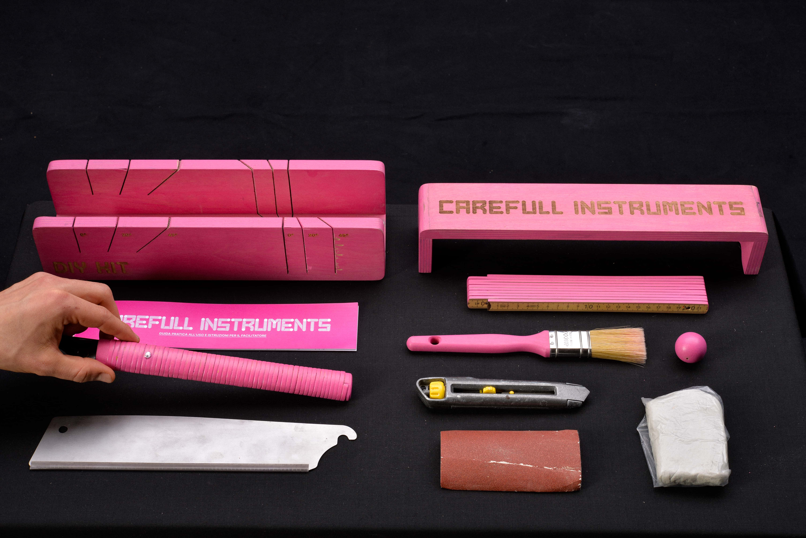
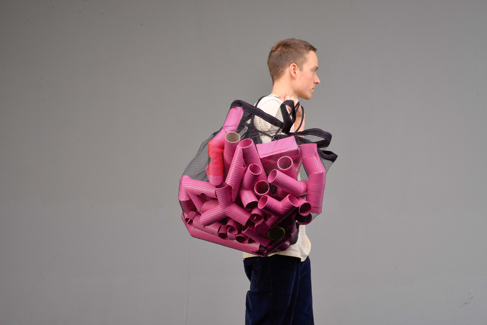

CAREFULL
INSTRUMENTS
2024
The CARE(FULL) INSTRUMENTS project is a collaborative work that involved OfficineVispa in the Don Bosco Community of Bolzano. Utilizing an ethnographic approach, the project engaged with social workers form OfficineVispa, using role play methods to develope the final design. The brief consisted in developing games for a method called "Apprendimento esperenziale".
The "TUBE RUN" is 1 out of the 4 games we developed togheter, which express at his best the CI of this project. The CMF is approached from a limit perspective: we decided to use only cardboard tubes offcuts from print shop to develope the game. Therefore, the finishing choice was fundamental: a bright color and a silky touch feel. The game, also, is contained in a practical net that can be opened by pulling a cord, spreading all the tubes on the ground. The net is up-cycled from apple industry present in South Tyrol, where the project was developed.
The scalable version of the project takes shape in a wooden box which contains the tools to create the games and a complete guide with instructions. Right now Officine Vispa is using the project and some blueprints are already shared in the social workers network in Trento.


